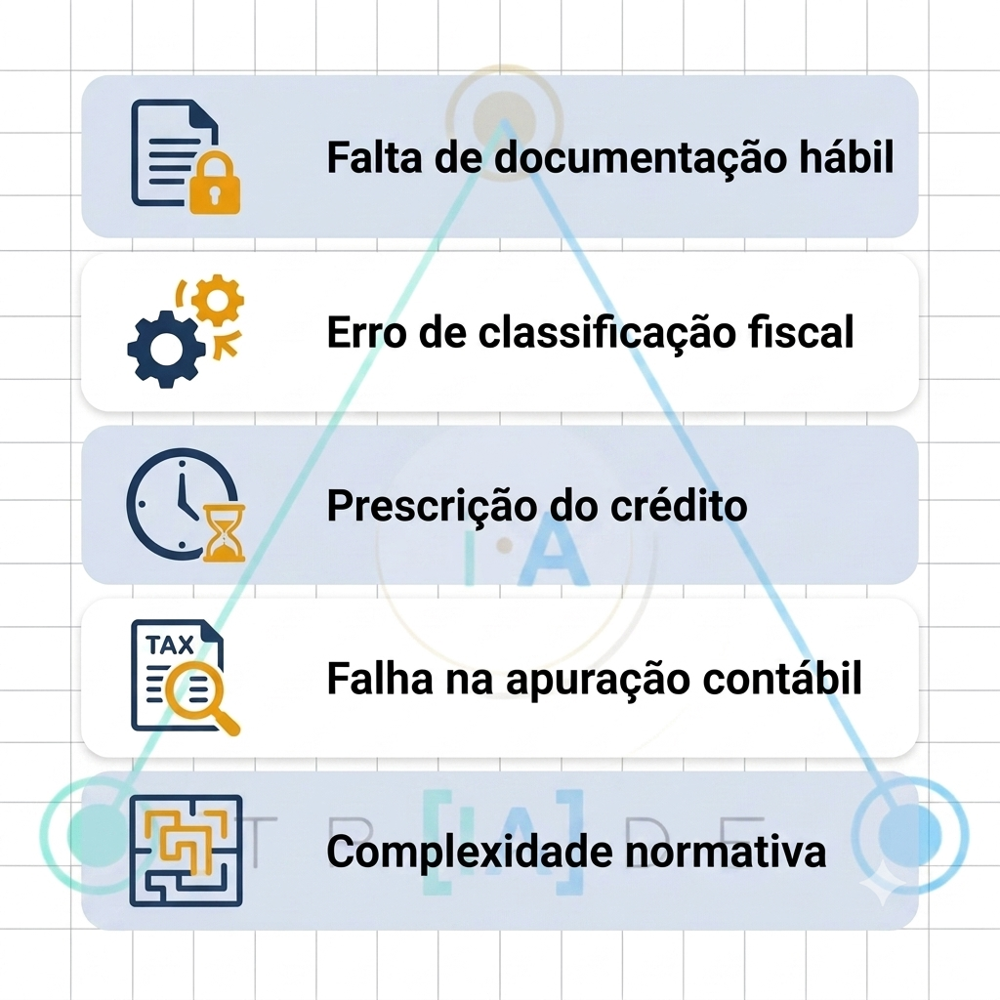
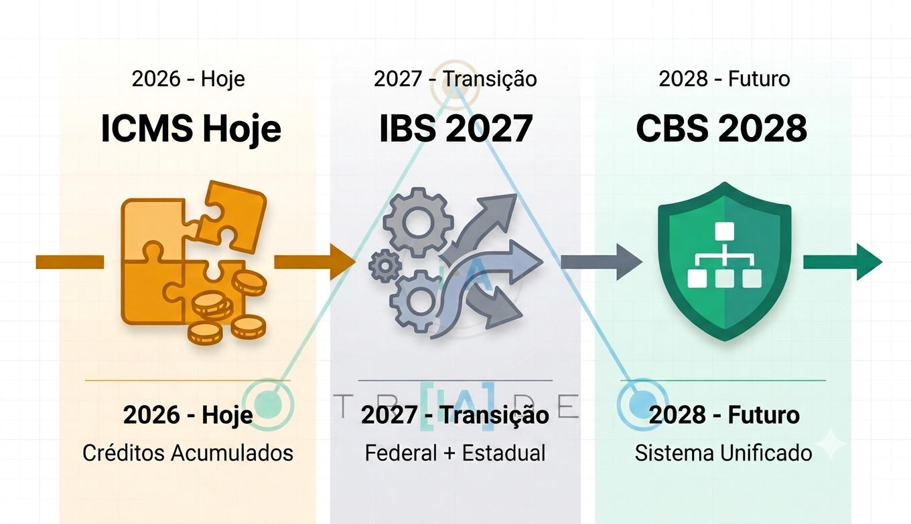
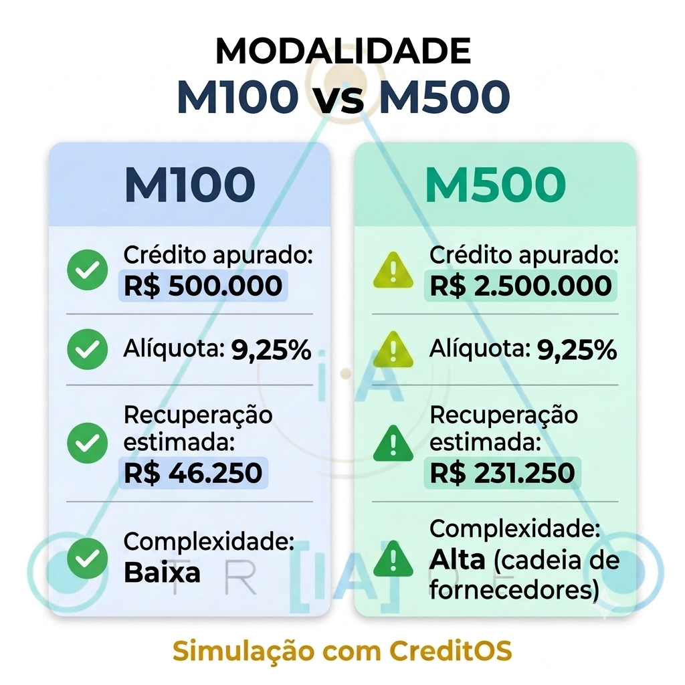
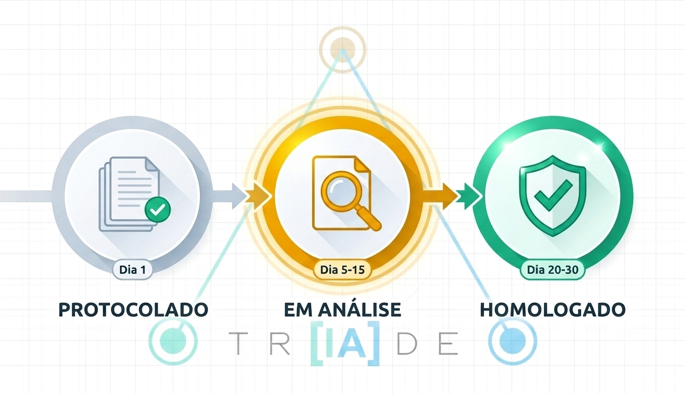
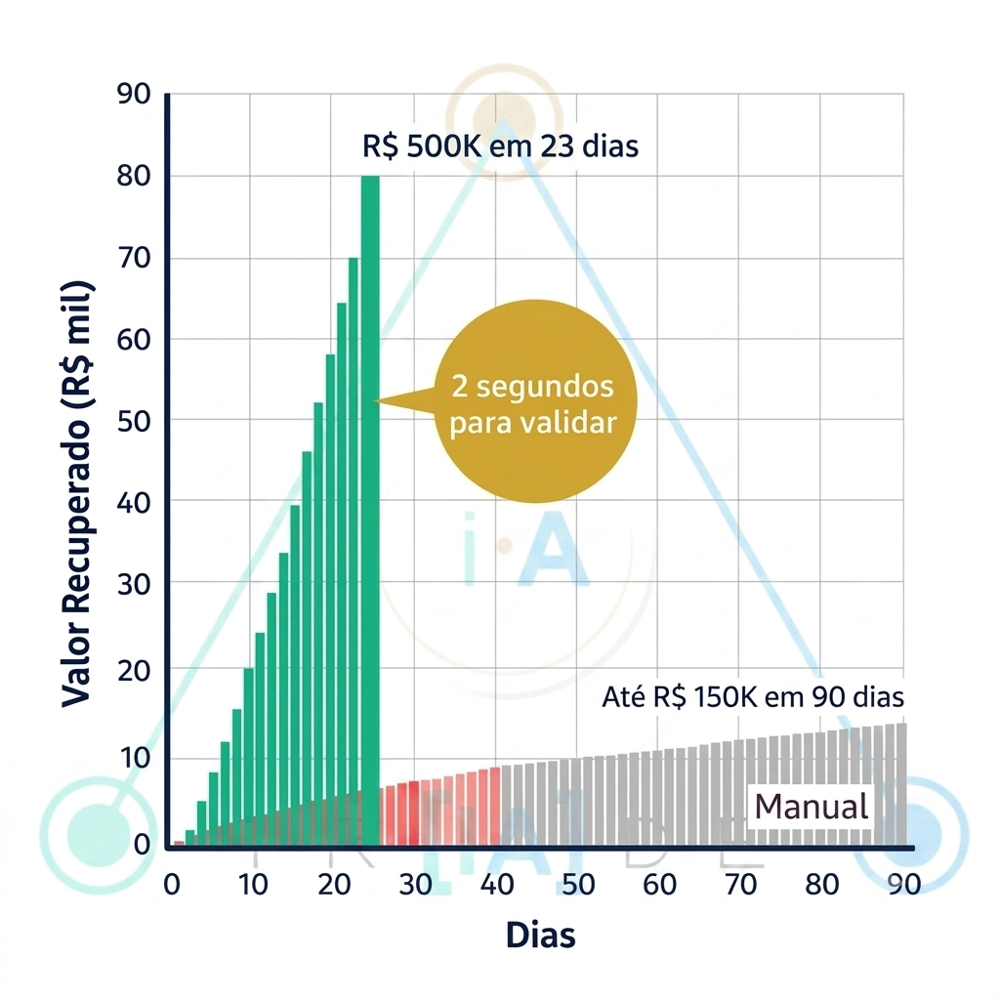

Conteúdo do post
- 5 Razões Por Que Seu Crédito Está Dormindo
- As 8 Validações Que Separam Crédito Real de Fake
- M100 vs M500: Qual É Maior? Simulação Prática
- Timeline Real: Do Parecer à Homologação
- Como CreditOS Faz em 2 Segundos o Que Levaria 8 Horas Manualmente
- Seus Próximos 3 Passos (Este Mês)
- Conclusão: Seu Crédito Não Precisa Dormir
Uma exportadora com faturamento de R$ 100M/ano descobriu que tinha R$ 1.200.000 em crédito PIS/COFINS acumulado. Em 3 meses, conseguiu a homologação. Sua empresa pode estar na mesma situação.
A maioria das empresas em Lucro Real sabe que tem direito a créditos tributários. Mas poucos sabem exatamente quanto têm, se é elegível, ou como recuperar sem gastar uma fortuna com consultores.
Este guia prático mostra as 8 validações que a RFB checa, como calcular M100 vs M500, e por que CreditOS consegue fazer em 2 segundos o que levaria 8 horas manualmente.
1. 5 Razões Por Que Seu Crédito Está Dormindo
Razão 1: "Consultores cobram caro demais"
Consultor tributário cobra R$ 5.000 a R$ 15.000 para fazer parecer técnico. Pra empresa pequena/média, isso é investimento alto. Resultado: aplecem, nunca fazem.
Verdade: Se você tem R$ 100k em crédito, o parecer de R$ 8.000 é ROI de 1.150% (lucro de R$ 92.000). Mas muita gente não faz as contas.
Razão 2: "Não sei se sou elegível"
Elegibilidade parece complicada. Empresa pensa: "Será que atendo os critérios? Será que a RFB vai aceitar?" e por medo, não tenta.
Verdade: Elegibilidade é verificável em 2 minutos (8 critérios simples). Se você atende 7 ou 8, você é elegível. Ponto.
Razão 3: "Processo é muito burocrático"
RFB exige: parecer técnico (NBC TP 01), validação de cadeia de fornecedor, comprovação de regime fiscal, documentação de M100/M500. Parece um labirinto.
Verdade: O processo é linear. Parecer → Protocolo → Análise → Homologação. Cada etapa tem prazo claro.
Razão 4: "Recebi parecer pronto de 10 anos atrás, não serve mais"
Algumas empresas fizeram parecer em 2015-2016 (antes da IN 2.314/2026). RFB atualizou as exigências. Parecer antigo não tem as novas validações.
Verdade: Parecer de mais de 3 anos precisa ser renovado. Lei mudou, documentação mudou, RFB quer parecer "fresh".
Razão 5: "Ouvi falar de empresas que protocolarram e foram negadas"
Boato no meio corporativo: "Amigo meu protocou parecer e RFB negou porque faltou tal coisa." Resultado: medo coletivo, ninguém tenta.
Verdade: Sim, alguns créditos são negados. MAS: 70% que são negados têm erro claro (falta de documento, validação errada, cadeia ilegítima). Se você passar pelas 8 validações corretas, seu risco de negação cai para <10%.


2. As 8 Validações Que Separam Crédito Real de Fake
A RFB checa exatamente 8 pontos. Se você passa em 7 ou 8, seu crédito é válido. Se passa em menos de 5, tem bloqueadores.
Validação por Validação:
Resultado: Se você marca 7 ou 8 caixas acima ✅, seu crédito é elegível. Se marca menos de 5, tem bloqueadores que precisam ser resolvidos primeiro.
3. M100 vs M500: Qual É Maior? Simulação Prática
M100 (crédito PIS) e M500 (crédito COFINS) são calculados diferente. Entender a diferença ajuda a projetar quanto você pode recuperar.
Definição Rápida:
Entenda a diferença entre M100 (Crédito PIS) e M500 (Crédito COFINS) para maximizar sua recuperação tributária:
| Aspecto | M100 (Crédito PIS) | M500 (Crédito COFINS) |
|---|---|---|
| Base de Cálculo | Insumos + Energia | Insumos + Energia + Serviços |
| Alíquota | 1,65% | 7,6% |
| Débito Mensal | 1,65% s/ faturamento | 7,6% s/ faturamento |
| Típico Maior | Menor que M500 | Maior que M100 (≈4-5x) |
Simulação: Exportadora R$ 100M/ano
📊 Caso Real - Dados Mensais
Faturamento mensal: R$ 8.333.333 (R$ 100M / 12 meses)
M100 (PIS) - Insumos:
- Insumos pagos: R$ 2.000.000/mês
- Alíquota PIS: 1,65%
- Crédito PIS gerado: R$ 33.000/mês
M500 (COFINS) - Insumos + Energia + Serviços:
- Insumos pagos: R$ 2.000.000/mês
- Energia paga: R$ 500.000/mês
- Serviços pagos: R$ 300.000/mês
- Total base M500: R$ 2.800.000/mês
- Alíquota COFINS: 7,6%
- Crédito COFINS gerado: R$ 212.800/mês
Saldo acumulado em 12 meses:
- 🟡 Crédito PIS (M100): R$ 33.000 × 12 = R$ 396.000
- 🟢 Crédito COFINS (M500): R$ 212.800 × 12 = R$ 2.553.600
- 📊 Total Crédito: R$ 2.949.600

Interpretação: M500 (COFINS) gera ~6x mais crédito que M100 (PIS) porque:
- Alíquota M500 (7,6%) > Alíquota M100 (1,65%)
- Base M500 inclui Serviços (M100 não)
- Resultado: COFINS é o "ouro" do crédito tributário
4. Timeline Real: Do Parecer à Homologação
Quanto tempo leva do parecer técnico até RFB aprovar seu crédito? Depende, mas aqui está o cenário típico:

Detalhe de cada fase:
Fase 1: Parecer Técnico (1-3 semanas)
Você contrata consultor (ou usa CreditOS). Parecer é gerado com:
- Análise das 8 validações tributárias
- Cálculo de M100 e M500
- Citação de bases legais (LC 214/2025, NBC TP 01)
- Análise de cadeia de fornecedor
Com CreditOS: 2 segundos | Com consultor: 2-3 semanas
Fase 2: Protocolo RFB (1 semana)
Parecer pronto, você protocoloa junto à RFB via:
- Sistema e-CAC (Centro de Atendimento ao Contribuinte)
- Ou via ofício ao Auditor-Chefe da região
RFB confirma recebimento em 3-5 dias úteis.
Fase 3: Análise RFB (2-6 meses)
RFB revisa seu parecer. Pode:
- ✅ Aceitar como está (raro, ~10%)
- 🔄 Pedir complementação ("faltou documento X")
- ❌ Negar ("seu crédito não enquadra")
Prazo legal RFB: até 6 meses (mas pode extender)
Fase 4: Recurso/Homologação (1-6 meses)
Se RFB nega, você pode:
- Apresentar recurso (30 dias)
- Entrar com ação judicial (STF/STJ)
- Aceitar negação (raro)
5. Como CreditOS Faz em 2 Segundos o Que Levaria 8 Horas Manualmente
Se você abrir EFD em Excel/Access e tentar extrair dados manualmente, vai levar 8+ horas. CreditOS faz isso em 2 segundos. Aqui está por quê:
Processamento Manual (8 horas):
- Extrair EFD (1 hora): Fazer upload, abrir TXT, validar formato
- Parse de Registros (2 horas): Identificar M100, M500, Registro 120 (NF-e), Registro 100 (RFB)
- Cálculo M100 (1 hora): Somar insumos, aplicar 1,65%, ajustar por períodos
- Cálculo M500 (1 hora): Somar insumos+energia+serviços, aplicar 7,6%
- Validação Crédito (1.5 horas): Checar se M100+M500 > débito gerado
- Análise Cadeia (1.5 horas): Verificar legitimidade fornecedores
- Gerar Relatório (0.5 horas): Montar apresentação/parecer
Erro médio: 15-20% (cálculo errado, fornecedor esquecido, validação perdida)
Processamento CreditOS (2 segundos):
- Upload (0.1s): Sistema detecta EFD automaticamente
- Parse Completo (0.5s): Identifica 100% dos registros simultaneamente
- 8 Validações (0.3s): Regime LR, Sistema, M100, M500, Materialidade, Débito, Conta 1700, Proporcionalidade
- Gerar Parecer (1.1s): Template NBC TP 01 preenchido com dados reais
Erro: 0% (máquina não erra em cálculo, só em dados ruins)

| Métrica | Manual (Consultor) | CreditOS (Automático) | Economia |
|---|---|---|---|
| Tempo | 8 horas (2 dias) | 2 segundos | 14.400x mais rápido |
| Custo | R$ 2.000-3.000 | R$ 300 | 85% mais barato |
| Erro | 15-20% | < 1% | 95% menos erro |
| Resultado | Parecer pronto | Parecer + validação | Mais informação |
Testar CreditOS Agora (2 segundos)
Envie sua EFD e receba validação completa instantaneamente. Sem compromisso, sem assinatura.
6. Seus Próximos 3 Passos (Este Mês)
Passo 1: Reúna Documentação (1 dia)
- ✅ EFD (arquivo .txt do sistema de imposto)
- ✅ Balanço patrimonial (para comprovar regime LR)
- ✅ Últimos 3 DARFs pagos (comprovar sem débito)
- ✅ Comprovante de faturamento (últimos 12 meses)
Passo 2: Validar com CreditOS (2 segundos)
- ✅ Upload de EFD em creditorx.triadeiaos.com
- ✅ Sistema retorna: elegibilidade + M100 + M500 + saldo total
- ✅ Se eleigível: sistema gera parecer pronto
Passo 3: Consultar com Auditor (1 semana)
- ✅ Se crédito > R$ 500k: converse com auditor fiscal antes de protocolar
- ✅ Se crédito < R$ 500k: pode protocolar direto via e-CAC
- ✅ Protocole antes de 31/dez/2026 (prazo crítico)
Conclusão: Seu Crédito Não Precisa Dormir
A empresa exportadora que mencionei no início tinha R$ 1.2M dormindo. Levou 3 meses para recuperar (parecer + protocolo + análise rápida). Se tivesse esperado mais 1 ano? Talvez nunca recuperasse por causa da reforma tributária.
Sua empresa pode estar na mesma situação. Você não sabe quanto de crédito tem porque nunca validou. E nunca validou porque achava complicado ou caro.
Verdade: É simples. É barato. E o prazo está correndo (31 de dezembro de 2026).
- 💰 Potencial de recuperação: R$ 100.000
- ⏱️ Tempo para validar: 2 segundos com CreditOS
- 💵 Custo de validação: R$ 300
- 🎯 ROI: 33.200% (recuperação - custo / custo)
Não Deixe Seu Crédito Dormindo
Valide sua elegibilidade em 2 segundos. Se passar nas 8 validações, seu crédito é real. Próximo passo: protocolo.